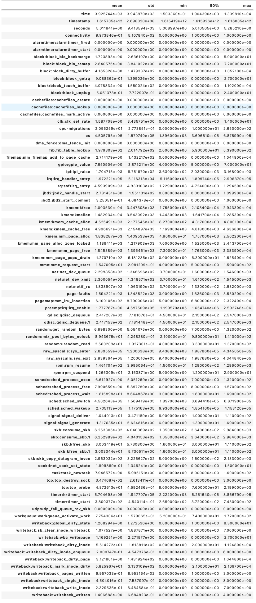

Dr. Alberto Huertas Research on IT-Security

The data was collected using the Linux perf tool.
| Id | Feature | Description |
|---|---|---|
| 1. | 'time' | - |
| 2. | 'timestamp' | Timestamp when the event took place. |
| 3. | 'seconds' | - |
| 4. | 'connectivity' | Does this mean the network connection was up during that period? |
| 5. | 'alarmtimer:alarmtimer_fired' | An alarm was fired? |
| 6. | 'alarmtimer:alarmtimer_start' | A timer was started? |
| 7. | 'block:block_bio_backmerge' | Disk event. Did a bio_backmerge event happen? |
| 8. | 'block:block_bio_remap' | An operation for a logical device has been mapped to a raw block device. |
| 9. | 'block:block_dirty_buffer' | Software defined kernel event. Signals that the buffer has been written to. |
| 10. | 'block:block_getrq' | Tracepoint event |
| 11. | 'block:block_touch_buffer' | Gets triggered on |
| touch_buffer() event | ||
| 12. | 'block:block_unplug' | - |
| 13. | 'cachefiles:cachefiles_create' | New cachefile was created |
| 14. | 'cachefiles:cachefiles_lookup' | - |
| 15. | 'cachefiles:cachefiles_mark_active' | - |
| 16. | 'clk:clk_set_rate' | - |
| 17. | 'cpu-migrations' | - |
| 18. | 'cs' | - |
| 19. | 'dma_fence:dma_fence_init' | - |
| 20. | 'fib:fib_table_lookup' | - |
| 21. | 'filemap:mm_filemap_add_to_page_cache' | - |
| 22. | 'gpio:gpio_value' | - |
| 23. | 'ipi:ipi_raise' | - |
| 24. | 'irq:irq_handler_entry' | - |
| 25. | 'irq:softirq_entry' | - |
| 26. | 'jbd2:jbd2_handle_start' | - |
| 27. | 'jbd2:jbd2_start_commit' | - |
| 28. | 'kmem:kfree' | - |
| 29. | 'kmem:kmalloc' | - |
| 30. | 'kmem:kmem_cache_alloc' | - |
| 31. | 'kmem:kmem_cache_free' | - |
| 32. | 'kmem:mm_page_alloc' | - |
| 33. | 'kmem:mm_page_alloc_zone_locked' | - |
| 34 | 'kmem:mm_page_free' | - |
| 35. | 'kmem:mm_page_pcpu_drain' | - |
| 36. | 'mmc:mmc_request_start' | - |
| 37. | 'net:net_dev_queue' | - |
| 38. | 'net:net_dev_xmit' | - |
| 39. | 'net:netif_rx' | - |
| 40. | 'page-faults' | - |
| 41. | 'pagemap:mm_lru_insertion' | - |
| 42. | 'preemptirq:irq_enable' | - |
| 43. | 'qdisc:qdisc_dequeue' | - |
| 44. | 'qdisc:qdisc_dequeue.1' | - |
| 45. | 'random:get_random_bytes' | - |
| 46. | 'random:mix_pool_bytes_nolock' | - |
| 47. | 'random:urandom_read' | - |
| 48. | 'raw_syscalls:sys_enter' | - |
| 49. | 'raw_syscalls:sys_exit' | - |
| 50. | 'rpm:rpm_resume' | - |
| 51. | 'rpm:rpm_suspend' | - |
| 52. | 'sched:sched_process_exec' | - |
| 53. | 'sched:sched_process_free' | - |
| 54. | 'sched:sched_process_wait' | - |
| 55. | 'sched:sched_switch' | - |
| 56. | 'sched:sched_wakeup' | - |
| 57. | 'signal:signal_deliver' | - |
| 58. | 'signal:signal_generate' | - |
| 59. | 'skb:consume_skb' | - |
| 60. | 'skb:consume_skb.1' | - |
| 61. | 'skb:kfree_skb' | - |
| 62. | 'skb:kfree_skb.1' | - |
| 63. | 'skb:skb_copy_datagram_iovec' | - |
| 64. | 'sock:inet_sock_set_state' | - |
| 65. | 'task:task_newtask' | - |
| 66. | 'tcp:tcp_destroy_sock' | - |
| 67. | 'tcp:tcp_probe' | - |
| 68. | 'timer:hrtimer_start' | - |
| 69. | 'timer:timer_start' | - |
| 70. | 'udp:udp_fail_queue_rcv_skb' | - |
| 71. | 'workqueue:workqueue_activate_work' | - |
| 72. | 'writeback:global_dirty_state' | - |
| 73. | 'writeback:sb_clear_inode_writeback' | - |
| 74. | 'writeback:wbc_writepage' | - |
| 75. | 'writeback:writeback_dirty_inode' | - |
| 76. | 'writeback:writeback_dirty_inode_enqueue' | - |
| 77. | 'writeback:writeback_dirty_page' | - |
| 78. | 'writeback:writeback_mark_inode_dirty' | - |
| 79. | 'writeback:writeback_pages_written' | - |
| 80. | 'writeback:writeback_single_inode' | - |
| 81. | 'writeback:writeback_write_inode' | - |
| 82. | 'writeback:writeback_written' | - |